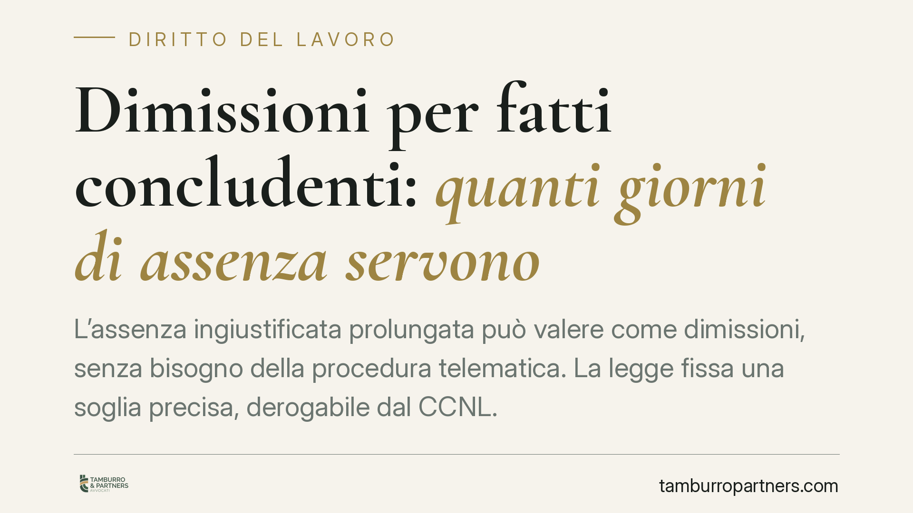

Dimissioni per fatti concludenti: quanti giorni di assenza servono
L'assenza ingiustificata prolungata può valere come dimissioni, senza bisogno della procedura telematica. La legge fissa una soglia precisa, derogabile dal CCNL. Capire quando scatta l'effetto risolutivo è essenziale: per il datore, per evitare automatismi affrettati; per il lavoratore, per non perdere tutele collegate alla cessazione del rapporto.

Il fatto
Un lavoratore smette di presentarsi al lavoro senza fornire alcuna giustificazione. Per settimane non comunica nulla: né malattia, né permesso, né altra causa. In passato, in casi simili, il datore procedeva per via disciplinare, contestando l'assenza e avviando l'iter del licenziamento.
Oggi la situazione è diversa. L'ordinamento prevede un meccanismo che qualifica l'assenza ingiustificata protratta come dimissioni volontarie, con effetto risolutivo automatico. È quello che comunemente si chiama "dimissioni per fatti concludenti" o "dimissioni di fatto".
Inquadramento normativo
La disciplina è contenuta nell'art. 26, comma 7-bis, del D.lgs. 151/2015. Il comma è stato inserito dall'art. 19 della L. 203/2024, il cosiddetto Collegato Lavoro 2024 (legge, non decreto convertito).
L'art. 26 regola la procedura telematica per dimissioni e risoluzione consensuale. Il nuovo comma 7-bis introduce un'eccezione: in caso di assenza ingiustificata del lavoratore protratta oltre il termine previsto dal CCNL applicabile o, in sua assenza, oltre 15 giorni, il rapporto si intende risolto per volontà del lavoratore. In questo caso non è richiesta la procedura telematica di convalida.
Il datore deve comunque comunicare l'assenza all'Ispettorato territoriale del lavoro, che può verificare la veridicità della comunicazione. La risoluzione non opera se il lavoratore dimostra l'impossibilità, per causa di forza maggiore o per fatto imputabile al datore, di comunicare i motivi dell'assenza.
Due precisazioni sulla soglia. Primo: il CCNL ha priorità. Se il contratto collettivo applicabile fissa un termine diverso, è quello a contare, in più o in meno rispetto ai 15 giorni. Secondo: il termine legale residuale è di 15 giorni di assenza ingiustificata. Va verificato caso per caso il computo esatto, perché la formulazione normativa e le clausole collettive possono incidere sul conteggio.
Perché non è un licenziamento
Le dimissioni per fatti concludenti non vanno confuse con il licenziamento disciplinare. Sono istituti diversi, con presupposti e conseguenze distinte.
Il licenziamento disciplinare per assenza ingiustificata segue la procedura dell'art. 7 dello Statuto dei Lavoratori (L. 300/1970): contestazione scritta, termine a difesa del lavoratore, eventuale sanzione. È un atto del datore.
Le dimissioni di fatto, invece, non sono un atto del datore ma una risoluzione per volontà del lavoratore, desunta dal suo comportamento. Non richiedono contestazione disciplinare né rispetto dei termini dell'art. 7.
La scelta tra i due percorsi non è indifferente. Qualificare l'assenza come dimissioni significa chiudere il rapporto senza oneri procedurali, ma espone il datore a contestazioni se l'assenza risulta giustificata o se la comunicazione all'Ispettorato è viziata.
Implicazioni pratiche
Per il datore di lavoro, il meccanismo semplifica la gestione dell'abbandono del posto, ma non va trattato come automatismo cieco. Un'assenza apparentemente ingiustificata può nascondere una malattia non comunicata, un infortunio, un fatto impeditivo. Applicare le dimissioni di fatto in questi casi significa esporsi a un'impugnazione.
Per il lavoratore, la qualificazione come dimissioni ha un peso rilevante sulle tutele collegate alla cessazione. Secondo l'orientamento prevalente, le dimissioni volontarie non danno accesso alla NASpI, salvo diverse indicazioni INPS e salvo le ipotesi di dimissioni per giusta causa. È un punto ancora discusso e va verificato alla luce delle circolari più recenti.
Cosa fare in concreto
- Datore: prima di qualificare l'assenza come dimissioni, verifica il CCNL applicabile e il termine da esso previsto. Non dare per scontata la soglia dei 15 giorni.
- Datore: documenta i tentativi di contatto con il lavoratore e conserva ogni comunicazione, prima di procedere.
- Datore: effettua la comunicazione all'Ispettorato territoriale del lavoro e attendi gli esiti della verifica.
- Lavoratore: se l'assenza dipende da malattia, infortunio o altra causa, comunica tempestivamente il motivo e conserva prova dell'invio.
- Lavoratore: se ricevi la comunicazione di risoluzione e ritieni l'assenza giustificata, attivati subito per contestarla: i termini di impugnazione sono stretti.
Ogni caso va valutato alla luce del CCNL e della documentazione disponibile.
---
Contributo informativo a cura di Tamburro & Partners - Avv. Giuseppe Tamburro. Non costituisce parere legale.
Ogni storia di lavoro ha i suoi tempi.
Se gestisci HR e vuoi un confronto su contenzioso, ispezioni o licenziamenti, scrivi allo studio. Ti rispondiamo entro un giorno lavorativo.